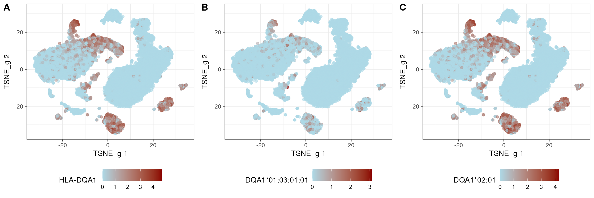
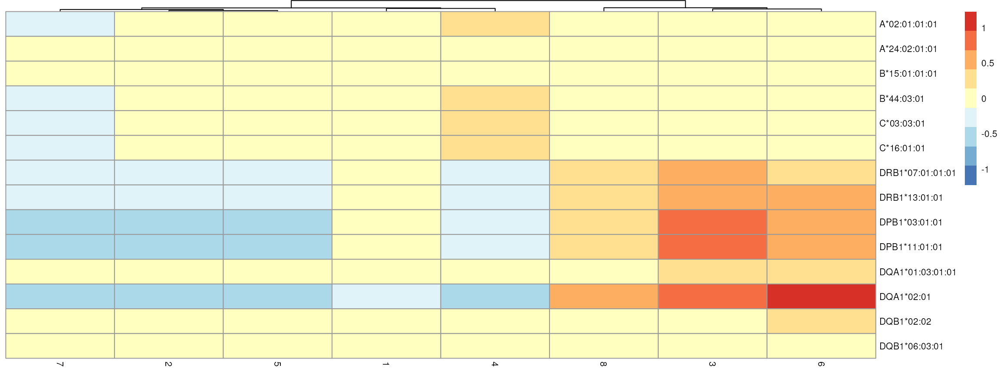
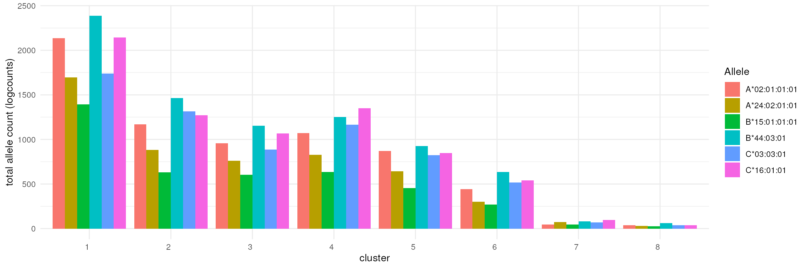
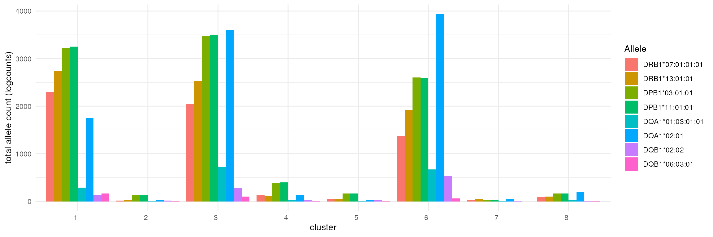

scIGD: Unraveling Immunogenomic Diversity in Single-Cell Data
Ahmad Al Ajami1, Jonas Schuck2, Federico Marini3, Katharina Imkeller4
Source:vignettes/scIGDWorkflowDemo.Rmd
scIGDWorkflowDemo.RmdOverview
The human immune system is governed by a complex interplay of molecules encoded by highly diverse genetic loci. Immune genes such as B and T cell receptors, human leukocyte antigens (HLAs), and killer Ig-like receptors (KIRs) exhibit remarkable allelic diversity across populations. However, conventional single-cell analysis methods often overlook this diversity, leading to erroneous quantification of immune mediators and compromised inter-donor comparability.
Description
To address these challenges and unlock deeper insights from single-cell studies, we present a comprehensive workflow comprising two software and one data packages:
scIGD (single-cell ImmunoGenomic Diversity): A Snakemake workflow designed to automate allele-typing processes for immune genes, with a focus on key targets like HLAs. In addition, it facilitates allele-specific quantification from scRNA-seq data using donor-specific references.
SingleCellAlleleExperiment: This R/Bioconductor package maximizes the analytical potential of results obtained from scIGD. It offers a versatile multi-layer data structure, allowing representation of immune genes at various levels, from alleles to genes to functionally similar gene groups. This enables comprehensive analysis across different layers of immunologically-relevant annotation.
scaeData: An R/ExperimentHub data package housing three 10x datasets processed by scIGD. These datasets can be utilized to perform exploratory and downstream analysis using the novel SingleCellAlleleExperiment data structure.
Pre-requisites
- Basic knowledge of R syntax
- Familiarity with single-cell transcriptomic analyses, such as OSCA
- Familiarity with SingleCellExperiment and/or SummarizedExperiment
Participation
The format is a 45 minute session consisting of hands-on demos, exercises and Q&A.
Questions are welcome at any time. Contact details are listed at the bottom of the page.
R / Bioconductor packages used
-
SingleCellAlleleExperiment: https://bioconductor.org/packages/SingleCellAlleleExperiment -
scaeData: https://bioconductor.org/packages/scaeData
Time outline
| Activity | Time |
|---|---|
| Introduction | 10m |
| Overview of scIGD | 5m |
| Overview of scaeData | 5m |
| SingleCellAlleleExperiment + data analysis | 25m |
Demo goals and objectives
Learning goals
- Learn the constraints inherent in traditional single-cell analysis techniques and the importance of HLA allele-specific quantification
- Understand the difference between
SingleCellExperimentandSingleCellAlleleExperiment - Demonstrate how these tools can be applied and adopted to enhance existing workflows
Learning objectives
- Perform allele typing to identify HLA alleles from genetic sequences in scRNA-seq data
- Achieve allele-specific quantification using donor-specific references
- Navigate through distinct layers within the data object for diverse representations of HLA genes
- Conduct exploratory data and downstream analyses across any of the layers offered by the data object
Workflow demo
We start by loading the packages that will be used in this demo
suppressPackageStartupMessages({
library(SingleCellAlleleExperiment)
library(scaeData)
library(tidyverse)
library(gridExtra)
library(DropletUtils)
library(Matrix)
library(cowplot)
library(scran)
library(scater)
library(pheatmap)
})Loading data
scaeData consists of 3 single-cell RNA-sequencing
datasets that were sourced from publicly available datasets provided by
10x Genomics, and processed using scIGD:
pbmc_5k: 5k Peripheral Blood Mononuclear Cells (PBMCs) from a Healthy Donor (v3 chemistry)pbmc_10k: 10k Human PBMCs, 3’ v3.1, Chromium Controllerpbmc_20k: 20k Human PBMCs, 3’ HT v3.1, Chromium X
The scaeDataGet() function returns a list with four
elements. The dir element specifies the directory where
files downloaded from ExperimentHub are stored on your
device. The remaining three elements, barcodes,
features, and matrix, contain the
corresponding file names as named by ExperimentHub. This
list is then used to provide the necessary information for the related
parameters in SingleCellAlleleExperiment
Here, let’s view pbmc_20k:
data <- scaeDataGet(dataset = "pbmc_20k")
#> Retrieving barcode identifiers for **pbmc 20k** dataset...DONE
#> Retrieving feature identifiers for **pbmc 20k** dataset...DONE
#> Retrieving quantification matrix for **pbmc 20k** dataset...DONE
cells.dir <- file.path(data$dir, data$barcodes)
features.dir <- file.path(data$dir, data$features)
mat.dir <- file.path(data$dir, data$matrix)
cells <- utils::read.csv(cells.dir, sep = "", header = FALSE)
features <- utils::read.delim(features.dir, header = FALSE)
mat <- Matrix::readMM(mat.dir)
rownames(mat) <- cells$V1
colnames(mat) <- features$V1
head(mat)
#> 6 x 62760 sparse Matrix of class "dgTMatrix"
#> [[ suppressing 34 column names 'ENSG00000279928.2', 'ENSG00000228037.1', 'ENSG00000142611.17' ... ]]
#>
#> AAACCCAAGAAACACT . . . . . . . . . . . . . . . . . . . . . . . . . . . . . . .
#> AAACCCAAGAAACTCA . . . . . . . . . . . . . . . . . . . . . . . . . . . . . . .
#> AAACCCAAGAAACTGT . . . . . . . . . . . . . . . . . . . . . . . . . . . . . . .
#> AAACCCAAGAAATTGC . . . . . . . . . . . . . . . . . . . . . . . . . . . . . . .
#> AAACCCAAGAACAAGG . . . . . . . . . . . . . . . . . . . . . . . . . . . . . . .
#> AAACCCAAGAACAGGA . . . . . . . . . . . . . . . . . . . . . . . . . . . . . . .
#>
#> AAACCCAAGAAACACT . . . ......
#> AAACCCAAGAAACTCA . . . ......
#> AAACCCAAGAAACTGT . . . ......
#> AAACCCAAGAAATTGC . . . ......
#> AAACCCAAGAACAAGG . . . ......
#> AAACCCAAGAACAGGA . . . ......
#>
#> .....suppressing 62726 columns in show(); maybe adjust options(max.print=, width=)
#> ..............................A lookup table corresponding to each dataset, facilitating the creation of relevant additional data layers during object generation, can be accessed from the package’s extdata:
lookup <- read.csv(system.file("extdata", "pbmc_20k_lookup_table.csv", package="scaeData"))
head(lookup)
#> Allele Gene Function
#> 1 A*02:01:01:01 HLA-A HLA_class_I
#> 2 A*24:02:01:01 HLA-A HLA_class_I
#> 3 B*15:01:01:01 HLA-B HLA_class_I
#> 4 B*44:03:01 HLA-B HLA_class_I
#> 5 C*03:03:01 HLA-C HLA_class_I
#> 6 C*16:01:01 HLA-C HLA_class_ISingleCellAlleleExperiment
We proceed to generate a SingleCellAlleleExperiment
object.
The read-in function read_allele_counts() is used to
read in the data and generate a scae object.
When using your own data generated by scIGD, state the
path containing all expected files to the sample_dir
parameter in the read_allele_counts() function and the
corresponding lookup table. In case you renamed the files,
specify the new file identifiers in the corresponding parameters
lookup_file, barcode_file,
gene_file, and matrix_file, otherwise leave
them to the stated default values.
filter_mode="no": default value. This performs filtering
based on threshold=0 - filtering out columns (aka cells)
with a count sum of 0 over all rows (aka features).
filter_mode="yes": performs advanced filtering on the
computed inflection point of a knee plot based on barcode ranks. The
information to the corresponding plot including the inflection point
used for filtering is stored in
metadata(scae)[["knee_info"]].
filter_mode="custom": enables custom filtering based on
a threshold specified in the filter_threshold parameter.
This is particularly useful if, after examining the knee plot with
filter_mode="yes", you decide to use a different filter
threshold.
log=TRUE: performs normalization on the raw counts -
default value. Note that the count matrix is extended (additional rows
are added) during object generation. It is crucial to compute size
factors only on data layers present in the raw data (non-immune and
alleles). Otherwise, immune features would contribute to the size
factors multiple times and thus, the size factors would be
incorrect.
gene_symbols=TRUE: adds the corresponding gene symbols
of the ENSEMBL ids to rowData.
scae <- read_allele_counts(samples_dir=data$dir,
barcode_file=data$barcodes,
gene_file=data$features,
matrix_file=data$matrix,
lookup_file=lookup,
filter_mode="yes",
log=TRUE,
gene_symbols=TRUE,
sample_names="example_data",
verbose=TRUE)
#>
#> Filtering performed based on the inflection point at: 1110 UMI counts.
#> Data Read_in completed
#> Using org.Hs to retrieve NCBI gene identifiers.
#> Generating SCAE object: Extending rowData with new classifiers
#> Generating SCAE object: Filtering at 1110 UMI counts.
#> Generating SCAE object: Compute Library Factors before adding new layers
#> Generating SCAE object: Aggregating alleles corresponding to the same gene
#> Generating SCAE object: Aggregating genes corresponding to the same functional groups
#> Generating SCAE object: Generate logcounts assay using Library Factors
#> SingleCellAlleleExperiment object completed
scae
#> class: SingleCellAlleleExperiment
#> dim: 62769 23767
#> metadata(1): knee_info
#> assays(2): counts logcounts
#> rownames(62769): ENSG00000279928.2 ENSG00000228037.1 ... HLA_class_I
#> HLA_class_II
#> rowData names(4): Ensembl_ID NI_I Quant_type Symbol
#> colnames(23767): AAACCCAAGAGCAGCT AAACCCACAATACCTG ... TTTGTTGTCCGATGTA
#> TTTGTTGTCGTGGCTG
#> colData names(3): Sample Barcode sizeFactor
#> reducedDimNames(0):
#> mainExpName: NULL
#> altExpNames(0):
#> ---------------
#> Including a total of 23 immune related features:
#> Allele-level information (14): A*02:01:01:01 A*24:02:01:01 ...
#> DQB1*02:02 DQB1*06:03:01
#> Immune genes (7): HLA-A HLA-B ... HLA-DQA1 HLA-DQB1
#> Functional level information (2): HLA_class_I HLA_class_II
# NOTE: when using your own data generated by scIGD, you only have to populate `samples_dir` with the folder path. All of `barcode_file`, `gene_file` and `matrix_file` can be left untouched.Showcasing content of object slots
rowData
Two new classification columns are introduced in the
rowData slot. Namely, the NI_I column
(classification of each row as NI=non_immune or
I=immune) and Quant_type column
(classification of each row to its corresponding data layer -
A, G or F). Both columns are used
jointly to match each row in the object to its corresponding data
layer:
rowData(scae)
#> DataFrame with 62769 rows and 4 columns
#> Ensembl_ID NI_I Quant_type Symbol
#> <character> <character> <character> <character>
#> ENSG00000279928.2 ENSG00000279928.2 NI G NA
#> ENSG00000228037.1 ENSG00000228037.1 NI G LOC100996583
#> ENSG00000142611.17 ENSG00000142611.17 NI G PRDM16
#> ENSG00000284616.1 ENSG00000284616.1 NI G NA
#> ENSG00000157911.11 ENSG00000157911.11 NI G PEX10
#> ... ... ... ... ...
#> HLA-DPB1 HLA-DPB1 I G HLA-DPB1
#> HLA-DQA1 HLA-DQA1 I G HLA-DQA1
#> HLA-DQB1 HLA-DQB1 I G HLA-DQB1
#> HLA_class_I HLA_class_I I F HLA_class_I
#> HLA_class_II HLA_class_II I F HLA_class_IIcolData
Contains sample and barcode information. If the logcounts assay is computed, find another column containing the sizeFactors here:
colData(scae)
#> DataFrame with 23767 rows and 3 columns
#> Sample Barcode sizeFactor
#> <character> <character> <numeric>
#> AAACCCAAGAGCAGCT example_data AAACCCAAGAGCAGCT 1.17301
#> AAACCCACAATACCTG example_data AAACCCACAATACCTG 0.75794
#> AAACCCACACAACCGC example_data AAACCCACACAACCGC 1.12619
#> AAACCCACACACAGAG example_data AAACCCACACACAGAG 2.88660
#> AAACCCACAGATCATC example_data AAACCCACAGATCATC 1.56618
#> ... ... ... ...
#> TTTGTTGGTTCAAGGG example_data TTTGTTGGTTCAAGGG 0.660602
#> TTTGTTGTCACCTGGG example_data TTTGTTGTCACCTGGG 0.667899
#> TTTGTTGTCATTGAGC example_data TTTGTTGTCATTGAGC 0.808125
#> TTTGTTGTCCGATGTA example_data TTTGTTGTCCGATGTA 1.615128
#> TTTGTTGTCGTGGCTG example_data TTTGTTGTCGTGGCTG 0.585941Extracting layer-specific features
Getters are implemented to retrieve the different data layers integrated within the scae object.
Non-immune genes
scae_nonimmune_subset <- scae_subset(scae, "nonimmune")
scae_nonimmune_subset
#> class: SingleCellAlleleExperiment
#> dim: 62746 23767
#> metadata(1): knee_info
#> assays(2): counts logcounts
#> rownames(62746): ENSG00000279928.2 ENSG00000228037.1 ...
#> ENSG00000277475.1 ENSG00000275405.1
#> rowData names(4): Ensembl_ID NI_I Quant_type Symbol
#> colnames(23767): AAACCCAAGAGCAGCT AAACCCACAATACCTG ... TTTGTTGTCCGATGTA
#> TTTGTTGTCGTGGCTG
#> colData names(3): Sample Barcode sizeFactor
#> reducedDimNames(0):
#> mainExpName: NULL
#> altExpNames(0):
#> ---------------
#> Including a total of 0 immune related features:
#> Allele-level information (0):
#> Immune genes (0):
#> Functional level information (0):Alleles
scae_alleles_subset <- scae_subset(scae, "alleles")
scae_alleles_subset
#> class: SingleCellAlleleExperiment
#> dim: 14 23767
#> metadata(1): knee_info
#> assays(2): counts logcounts
#> rownames(14): A*02:01:01:01 A*24:02:01:01 ... DQB1*02:02 DQB1*06:03:01
#> rowData names(4): Ensembl_ID NI_I Quant_type Symbol
#> colnames(23767): AAACCCAAGAGCAGCT AAACCCACAATACCTG ... TTTGTTGTCCGATGTA
#> TTTGTTGTCGTGGCTG
#> colData names(3): Sample Barcode sizeFactor
#> reducedDimNames(0):
#> mainExpName: NULL
#> altExpNames(0):
#> ---------------
#> Including a total of 14 immune related features:
#> Allele-level information (14): A*02:01:01:01 A*24:02:01:01 ...
#> DQB1*02:02 DQB1*06:03:01
#> Immune genes (0):
#> Functional level information (0):HLA/Immune genes
scae_immune_subset <- scae_subset(scae, "immune_genes")
scae_immune_subset
#> class: SingleCellAlleleExperiment
#> dim: 7 23767
#> metadata(1): knee_info
#> assays(2): counts logcounts
#> rownames(7): HLA-A HLA-B ... HLA-DQA1 HLA-DQB1
#> rowData names(4): Ensembl_ID NI_I Quant_type Symbol
#> colnames(23767): AAACCCAAGAGCAGCT AAACCCACAATACCTG ... TTTGTTGTCCGATGTA
#> TTTGTTGTCGTGGCTG
#> colData names(3): Sample Barcode sizeFactor
#> reducedDimNames(0):
#> mainExpName: NULL
#> altExpNames(0):
#> ---------------
#> Including a total of 7 immune related features:
#> Allele-level information (0):
#> Immune genes (7): HLA-A HLA-B ... HLA-DQA1 HLA-DQB1
#> Functional level information (0):Functional gene groups
scae_functional_groups_subset <- scae_subset(scae, "functional_groups")
scae_functional_groups_subset
#> class: SingleCellAlleleExperiment
#> dim: 2 23767
#> metadata(1): knee_info
#> assays(2): counts logcounts
#> rownames(2): HLA_class_I HLA_class_II
#> rowData names(4): Ensembl_ID NI_I Quant_type Symbol
#> colnames(23767): AAACCCAAGAGCAGCT AAACCCACAATACCTG ... TTTGTTGTCCGATGTA
#> TTTGTTGTCGTGGCTG
#> colData names(3): Sample Barcode sizeFactor
#> reducedDimNames(0):
#> mainExpName: NULL
#> altExpNames(0):
#> ---------------
#> Including a total of 2 immune related features:
#> Allele-level information (0):
#> Immune genes (0):
#> Functional level information (2): HLA_class_I HLA_class_IIPre-processing workflow
plot_total_counts <- function(scae) {
total_counts <- colSums(counts(scae))
ggplot(data.frame(Total_Counts = total_counts), aes(x = Total_Counts)) +
geom_histogram(binwidth = 1000, fill = "skyblue", color = "black") +
labs(x = "total counts per cell",
y = "number of cells") +
theme_bw()
}
plot_total_counts(scae)
Feature filtering
Removing all features that have a total count less than 5; with the exception of all HLA/immune features - these are retained
'%nin%' <- Negate('%in%')
immune_features <- rownames(scae[rowData(scae)$NI_I == "I", ])
other_genes <- rownames(scae) %nin% immune_features
features_keep <- rowSums(counts(scae)[other_genes, ]) > 5
features_keep_names <- names(features_keep)[which(features_keep)]
scae <- scae[c(features_keep_names, immune_features), ]
dim(scae)
#> [1] 38026 23767Processing workflow
Distribution of HLA/immune features
plot_allele_dist <- function(scae){
immune_features <- rownames(scae[rowData(scae)$NI_I == "I", ])
p <- do.call(plot_grid, c(lapply(immune_features, function(feature){
ggplot(as.data.frame(logcounts(scae)[feature, ]), aes(x=logcounts(scae)[feature, ])) +
geom_histogram(color="black",
fill = "black",
breaks=seq(0, 3, by=0.10)) +
labs(x = feature) +
theme(axis.title.x = element_text(size = 8),
axis.title.y = element_text(size = 8),
plot.title = element_text(size = 8))}), ncol = 4))
print(p)
}
plot_allele_dist(scae)
plot_feature_expression <- function(scae, immune_features) {
plotExpression(scae, immune_features) +
theme_bw() +
theme(axis.text = element_text(size = 5),
axis.title = element_text(size = 8, face = "bold"),
axis.text.x = element_text(angle = 45, hjust = 1))
}
immune_features <- rownames(scae[rowData(scae)$NI_I == "I", ])
plot_feature_expression(scae, immune_features)
Downstream analysis
In this section, we provide insights into the various data layers of
the scae object and offer guidance on performing HLA/immune
gene expression analysis
Dimensionality reduction & clustering
PCA, UMAP, tSNE, and SNN graph can be computed/built using any of the
three layers offered by the SingleCellAlleleExperiment
object:
- non immune genes + immune genes
- non immune genes + immune alleles
- non immune genes + immune functional groups
This allows the representation of immune genes at various levels, from alleles to genes to functionally-similar gene groups.
In addition, it enables the user to perform comprehensive analysis across different layers of immunologically-relevant annotation. Different angles
It is important to create unique identifiers for each layer or run,
otherwise, the results will be overwritten and saved incorrectly as
PCA, for example.
For simplicity, we here perform dimensionality reduction and clustering on gene level, i.e., using immune and non-immune genes, after choosing top 2% HVG (for memory/demonstration reasons):
set.seed(42L)
genes <- rownames(scae[rowData(scae)$Quant_type == "G", ])
gene_var <- modelGeneVar(scae[genes, ])
chosen_hvgs <- getTopHVGs(gene_var, prop=0.02) # you could use 20%
immune_features <- rownames(scae[rowData(scae)$NI_I == "I", ])
scae <- scae[unique(c(immune_features, chosen_hvgs)), ] # do NOT do this - this is executed here for memory/demonstration reasons
scae <- runPCA(scae, subset_row=chosen_hvgs, name="PCA_g")
scae <- runUMAP(scae, dimred="PCA_g", name="UMAP_g")
scae <- runTSNE(scae, dimred="PCA_g", name="TSNE_g")
snn_graph <- buildSNNGraph(scae, k=50, use.dimred='PCA_g')
igraph_clusters <- igraph::cluster_louvain(snn_graph)$membership
scae$cluster_id <- as.factor(igraph_clusters)
p1 <- plotUMAP(scae, colour_by="cluster_id", dimred="UMAP_g") +
theme_bw() +
theme(axis.title.x = element_text(size = 8),
axis.title.y = element_text(size = 8),
legend.title = element_text(size = 8))
p2 <- plotTSNE(scae, colour_by="cluster_id", dimred="TSNE_g") +
theme_bw() +
theme(axis.title.x = element_text(size = 8),
axis.title.y = element_text(size = 8),
legend.title = element_text(size = 8))
plot_grid(p1, p2, ncol = 2)Visualization of HLA/immune features
Example of a gene and its alleles
This type of representation helps us determine which of the two alleles has a greater influence on the gene’s expression:
p1 <- plotReducedDim(scae, dimred = "TSNE_g", by_exprs_values = "logcounts", colour_by = "HLA-DQA1") + theme_bw() + theme(legend.position="bottom") +
scale_colour_gradient2(name = "HLA-DQA1", low = "lightblue", mid = "lightblue", high = "darkred", na.value = "gray80", guide = "colourbar")
p2 <- plotReducedDim(scae, dimred = "TSNE_g", by_exprs_values = "logcounts", colour_by = "DQA1*01:03:01:01") + theme_bw() + theme(legend.position="bottom") +
scale_colour_gradient2(name = "DQA1*01:03:01:01", low = "lightblue", mid = "lightblue", high = "darkred", na.value = "gray80", guide = "colourbar")
p3 <- plotReducedDim(scae, dimred = "TSNE_g", by_exprs_values = "logcounts", colour_by = "DQA1*02:01") + theme_bw() + theme(legend.position="bottom") +
scale_colour_gradient2(name = "DQA1*02:01", low = "lightblue", mid = "lightblue", high = "darkred", na.value = "gray80", guide = "colourbar")
plot_grid(plotlist = list(p1, p2, p3), ncol = 3, labels = c("A", "B", "C"))tSNE
This helps us identify the clusters or regions where immune features are expressed the most:
tsne_list <- list()
p1 <- plotTSNE(scae, colour_by="cluster_id", dimred="TSNE_g") + theme_bw()
tsne_list <- c(tsne_list, list(p1))
immune_features <- rownames(scae[rowData(scae)$NI_I == "I", ])
for (feature in immune_features){
p2 <- plotReducedDim(scae, dimred = "TSNE_g", by_exprs_values = "logcounts", colour_by = feature) + theme_bw() +
scale_colour_gradient2(name = feature, low = "lightblue", mid = "lightblue", high = "darkred", na.value = "gray80", guide = "colourbar")
tsne_list <- c(tsne_list, list(p2))
}
plot_grid(plotlist = tsne_list, ncol = 3)
Violin plots
Violin plots allow us to identify differences in allele expression within each cluster:
alleles <- rownames(scae[rowData(scae)$Quant_type == "A", ]) # you can also extract the alleles like this: rownames(scae_subset(scae, "alleles"))
plotExpression(scae, alleles, other_fields="cluster_id") +
facet_wrap(~cluster_id) +
theme_bw() +
theme(axis.text = element_text(size = 5),
axis.text.x = element_text(angle = 45, hjust = 1))
Heatmaps
Heatmaps enable us to identify upregulated or downregulated alleles across all clusters:
plotGroupedHeatmap(scae, features=alleles, group="cluster_id",
center=TRUE, scale=FALSE, cluster_rows=FALSE,
treeheight_col=5, fontsize=8)
Bar plots
Comparison of allele frequencies: HLA class I
class_I <- grep("^A|^B|^C", alleles, value = TRUE)
class_I_counts <- assay(scae[class_I, ], "logcounts")
class_I_df <- as.data.frame(as.table(as.matrix(class_I_counts)))
colnames(class_I_df) <- c("Allele", "Cell", "Count")
class_I_df$Cluster <- colData(scae)$cluster_id[match(class_I_df$Cell, colnames(scae))]
class_I_counts_by_cluster <- class_I_df %>%
group_by(Cluster, Allele) %>%
summarize(Total_Count = sum(Count))
ggplot(class_I_counts_by_cluster, aes(x = factor(Cluster), y = Total_Count, fill = Allele)) +
geom_bar(stat = "identity", position = "dodge") +
theme_minimal() +
labs(x = "cluster",
y = "total allele count (logcounts)") +
theme(axis.text.x = element_text(hjust = 1))
Comparison of allele frequencies: HLA class II
class_II <- grep("^DRB1|^DPB1|^DQA1|^DQB1", alleles, value = TRUE)
class_II_counts <- assay(scae[class_II, ], "logcounts")
class_II_df <- as.data.frame(as.table(as.matrix(class_II_counts)))
colnames(class_II_df) <- c("Allele", "Cell", "Count")
class_II_df$Cluster <- colData(scae)$cluster_id[match(class_II_df$Cell, colnames(scae))]
class_II_counts_by_cluster <- class_II_df %>%
group_by(Cluster, Allele) %>%
summarize(Total_Count = sum(Count))
ggplot(class_II_counts_by_cluster, aes(x = factor(Cluster), y = Total_Count, fill = Allele)) +
geom_bar(stat = "identity", position = "dodge") +
theme_minimal() +
labs(x = "cluster",
y = "total allele count (logcounts)") +
theme(axis.text.x = element_text(hjust = 1))
Session
sessionInfo()
#> R version 4.4.1 (2024-06-14)
#> Platform: x86_64-pc-linux-gnu
#> Running under: Ubuntu 22.04.4 LTS
#>
#> Matrix products: default
#> BLAS: /usr/lib/x86_64-linux-gnu/openblas-pthread/libblas.so.3
#> LAPACK: /usr/lib/x86_64-linux-gnu/openblas-pthread/libopenblasp-r0.3.20.so; LAPACK version 3.10.0
#>
#> locale:
#> [1] LC_CTYPE=en_US.UTF-8 LC_NUMERIC=C
#> [3] LC_TIME=en_US.UTF-8 LC_COLLATE=en_US.UTF-8
#> [5] LC_MONETARY=en_US.UTF-8 LC_MESSAGES=en_US.UTF-8
#> [7] LC_PAPER=en_US.UTF-8 LC_NAME=C
#> [9] LC_ADDRESS=C LC_TELEPHONE=C
#> [11] LC_MEASUREMENT=en_US.UTF-8 LC_IDENTIFICATION=C
#>
#> time zone: Etc/UTC
#> tzcode source: system (glibc)
#>
#> attached base packages:
#> [1] stats4 stats graphics grDevices utils datasets methods
#> [8] base
#>
#> other attached packages:
#> [1] pheatmap_1.0.12 scater_1.33.2
#> [3] scran_1.33.0 scuttle_1.15.1
#> [5] cowplot_1.1.3 Matrix_1.7-0
#> [7] DropletUtils_1.25.0 gridExtra_2.3
#> [9] lubridate_1.9.3 forcats_1.0.0
#> [11] stringr_1.5.1 dplyr_1.1.4
#> [13] purrr_1.0.2 readr_2.1.5
#> [15] tidyr_1.3.1 tibble_3.2.1
#> [17] ggplot2_3.5.1 tidyverse_2.0.0
#> [19] scaeData_1.1.1 SingleCellAlleleExperiment_1.1.0
#> [21] SingleCellExperiment_1.27.2 SummarizedExperiment_1.35.1
#> [23] Biobase_2.65.0 GenomicRanges_1.57.1
#> [25] GenomeInfoDb_1.41.1 IRanges_2.39.1
#> [27] S4Vectors_0.43.1 BiocGenerics_0.51.0
#> [29] MatrixGenerics_1.17.0 matrixStats_1.3.0
#>
#> loaded via a namespace (and not attached):
#> [1] RColorBrewer_1.1-3 jsonlite_1.8.8
#> [3] magrittr_2.0.3 ggbeeswarm_0.7.2
#> [5] farver_2.1.2 rmarkdown_2.27
#> [7] fs_1.6.4 zlibbioc_1.51.1
#> [9] ragg_1.3.2 vctrs_0.6.5
#> [11] memoise_2.0.1 DelayedMatrixStats_1.27.2
#> [13] htmltools_0.5.8.1 S4Arrays_1.5.4
#> [15] AnnotationHub_3.13.0 curl_5.2.1
#> [17] BiocNeighbors_1.23.0 Rhdf5lib_1.27.0
#> [19] SparseArray_1.5.20 rhdf5_2.49.0
#> [21] sass_0.4.9 bslib_0.7.0
#> [23] htmlwidgets_1.6.4 desc_1.4.3
#> [25] cachem_1.1.0 igraph_2.0.3
#> [27] mime_0.12 lifecycle_1.0.4
#> [29] pkgconfig_2.0.3 rsvd_1.0.5
#> [31] R6_2.5.1 fastmap_1.2.0
#> [33] GenomeInfoDbData_1.2.12 digest_0.6.36
#> [35] colorspace_2.1-0 AnnotationDbi_1.67.0
#> [37] dqrng_0.4.1 irlba_2.3.5.1
#> [39] ExperimentHub_2.13.0 textshaping_0.4.0
#> [41] RSQLite_2.3.7 org.Hs.eg.db_3.19.1
#> [43] beachmat_2.21.4 labeling_0.4.3
#> [45] filelock_1.0.3 fansi_1.0.6
#> [47] timechange_0.3.0 httr_1.4.7
#> [49] abind_1.4-5 compiler_4.4.1
#> [51] bit64_4.0.5 withr_3.0.0
#> [53] BiocParallel_1.39.0 viridis_0.6.5
#> [55] DBI_1.2.3 highr_0.11
#> [57] HDF5Array_1.33.3 R.utils_2.12.3
#> [59] rappdirs_0.3.3 DelayedArray_0.31.7
#> [61] bluster_1.15.0 tools_4.4.1
#> [63] vipor_0.4.7 beeswarm_0.4.0
#> [65] R.oo_1.26.0 glue_1.7.0
#> [67] rhdf5filters_1.17.0 grid_4.4.1
#> [69] Rtsne_0.17 cluster_2.1.6
#> [71] generics_0.1.3 gtable_0.3.5
#> [73] tzdb_0.4.0 R.methodsS3_1.8.2
#> [75] hms_1.1.3 metapod_1.13.0
#> [77] BiocSingular_1.21.2 ScaledMatrix_1.13.0
#> [79] utf8_1.2.4 XVector_0.45.0
#> [81] RcppAnnoy_0.0.22 ggrepel_0.9.5
#> [83] BiocVersion_3.20.0 pillar_1.9.0
#> [85] limma_3.61.4 BiocFileCache_2.13.0
#> [87] lattice_0.22-6 bit_4.0.5
#> [89] tidyselect_1.2.1 locfit_1.5-9.10
#> [91] Biostrings_2.73.1 knitr_1.48
#> [93] edgeR_4.3.5 xfun_0.45
#> [95] statmod_1.5.0 stringi_1.8.4
#> [97] UCSC.utils_1.1.0 yaml_2.3.9
#> [99] evaluate_0.24.0 codetools_0.2-20
#> [101] BiocManager_1.30.23 cli_3.6.3
#> [103] uwot_0.2.2 systemfonts_1.1.0
#> [105] munsell_0.5.1 jquerylib_0.1.4
#> [107] Rcpp_1.0.12 dbplyr_2.5.0
#> [109] png_0.1-8 parallel_4.4.1
#> [111] pkgdown_2.1.0 blob_1.2.4
#> [113] sparseMatrixStats_1.17.2 viridisLite_0.4.2
#> [115] scales_1.3.0 crayon_1.5.3
#> [117] rlang_1.1.4 KEGGREST_1.45.1